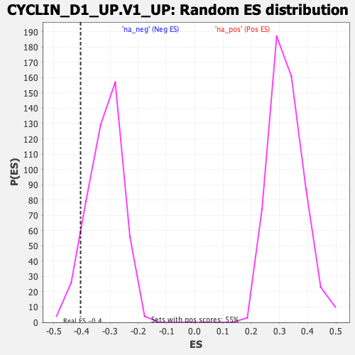

| | | Dataset | DE_genes |
| Phenotype | NoPhenotypeAvailable |
| Upregulated in class | na_neg |
| GeneSet | CYCLIN_D1_UP.V1_UP |
| Enrichment Score (ES) | -0.4047213 |
| Normalized Enrichment Score (NES) | -1.2722411 |
| Nominal p-value | 0.07912088 |
| FDR q-value | 0.27150062 |
| FWER p-Value | 1.0 |
Table: GSEA Results Summary
 Fig 1: Enrichment plot: CYCLIN_D1_UP.V1_UP
Fig 1: Enrichment plot: CYCLIN_D1_UP.V1_UP
Profile of the Running ES Score & Positions of GeneSet Members on the Rank Ordered List
| SYMBOL | RANK IN GENE LIST | RANK METRIC SCORE | RUNNING ES | CORE ENRICHMENT | | 1 | SLC6A9 | 136 | 154.700 | 0.0313 | No |
| 2 | TFPI2 | 147 | 149.657 | 0.0721 | No |
| 3 | TGFB1 | 315 | 95.879 | 0.0843 | No |
| 4 | ANPEP | 339 | 92.055 | 0.1079 | No |
| 5 | ZYX | 353 | 89.540 | 0.1317 | No |
| 6 | KIAA1549L | 436 | 76.177 | 0.1458 | No |
| 7 | SMOX | 451 | 74.202 | 0.1652 | No |
| 8 | BCL9 | 686 | 52.865 | 0.1596 | No |
| 9 | PCGF2 | 719 | 50.911 | 0.1710 | No |
| 10 | WT1-AS | 763 | 48.304 | 0.1808 | No |
| 11 | IFITM1 | 1039 | 35.774 | 0.1669 | No |
| 12 | FOXO4 | 1050 | 35.406 | 0.1758 | No |
| 13 | SHC3 | 1236 | 30.519 | 0.1683 | No |
| 14 | THBD | 1461 | 25.402 | 0.1559 | No |
| 15 | FHL2 | 1520 | 24.349 | 0.1577 | No |
| 16 | MARK3 | 1567 | 23.654 | 0.1603 | No |
| 17 | PLK3 | 1708 | 21.383 | 0.1541 | No |
| 18 | GNL1 | 1918 | 18.869 | 0.1412 | No |
| 19 | PKD1 | 1926 | 18.756 | 0.1458 | No |
| 20 | CCIN | 1960 | 18.446 | 0.1481 | No |
| 21 | ST3GAL4 | 1972 | 18.369 | 0.1522 | No |
| 22 | KMT2A | 2107 | 16.841 | 0.1453 | No |
| 23 | DMWD | 2152 | 16.422 | 0.1461 | No |
| 24 | HOXC5 | 2177 | 16.208 | 0.1485 | No |
| 25 | HOXB13 | 2237 | 15.725 | 0.1478 | No |
| 26 | ABCA2 | 2592 | 12.960 | 0.1206 | No |
| 27 | GALNS | 2702 | 12.374 | 0.1146 | No |
| 28 | KCNAB2 | 2756 | 11.946 | 0.1134 | No |
| 29 | TRPC3 | 3054 | 10.037 | 0.0904 | No |
| 30 | GGT5 | 3160 | 9.566 | 0.0839 | No |
| 31 | MAD1L1 | 3213 | 9.345 | 0.0820 | No |
| 32 | HNRNPA0 | 3255 | 9.154 | 0.0810 | No |
| 33 | OPRD1 | 3365 | 8.687 | 0.0740 | No |
| 34 | PLOD1 | 3374 | 8.658 | 0.0757 | No |
| 35 | RRAS | 3481 | 8.189 | 0.0688 | No |
| 36 | THY1 | 3791 | 7.024 | 0.0439 | No |
| 37 | FGD1 | 3882 | 6.730 | 0.0380 | No |
| 38 | ID1 | 3949 | 6.498 | 0.0341 | No |
| 39 | DYRK4 | 4020 | 6.290 | 0.0298 | No |
| 40 | KDM5C | 4166 | 5.881 | 0.0188 | No |
| 41 | CEBPD | 4178 | 5.832 | 0.0195 | No |
| 42 | BIN1 | 4199 | 5.783 | 0.0194 | No |
| 43 | CCKAR | 4208 | 5.765 | 0.0203 | No |
| 44 | TSC2 | 4348 | 5.417 | 0.0097 | No |
| 45 | ETV4 | 4399 | 5.271 | 0.0069 | No |
| 46 | CHRNA5 | 4459 | 5.093 | 0.0032 | No |
| 47 | SMTN | 4574 | 4.829 | -0.0054 | No |
| 48 | PTMS | 4929 | 4.007 | -0.0350 | No |
| 49 | GTF2H4 | 4956 | 3.944 | -0.0361 | No |
| 50 | TRAF1 | 5004 | 3.832 | -0.0391 | No |
| 51 | UBXN1 | 5009 | 3.825 | -0.0384 | No |
| 52 | RXRB | 5099 | 3.637 | -0.0451 | No |
| 53 | STAT5A | 5165 | 3.539 | -0.0498 | No |
| 54 | SPOCK2 | 5187 | 3.492 | -0.0506 | No |
| 55 | RXRA | 5604 | 2.776 | -0.0860 | No |
| 56 | AXIN1 | 5629 | 2.733 | -0.0873 | No |
| 57 | ARCN1 | 6143 | -2.313 | -0.1311 | No |
| 58 | MYL6 | 6469 | -2.821 | -0.1586 | No |
| 59 | GLB1 | 6564 | -3.006 | -0.1659 | No |
| 60 | EIF5A | 6707 | -3.234 | -0.1773 | No |
| 61 | HRC | 7156 | -4.001 | -0.2150 | No |
| 62 | COL4A2 | 7221 | -4.135 | -0.2194 | No |
| 63 | CASP3 | 7346 | -4.389 | -0.2290 | No |
| 64 | MSLN | 7917 | -5.854 | -0.2768 | No |
| 65 | NFE2 | 8000 | -6.121 | -0.2822 | No |
| 66 | CENPB | 8052 | -6.294 | -0.2849 | No |
| 67 | MSN | 8275 | -7.045 | -0.3022 | No |
| 68 | SNRPC | 8542 | -8.193 | -0.3230 | No |
| 69 | TRIM25 | 8593 | -8.439 | -0.3250 | No |
| 70 | MALL | 8604 | -8.497 | -0.3235 | No |
| 71 | TAP1 | 8733 | -9.007 | -0.3321 | No |
| 72 | DCAF7 | 8964 | -10.315 | -0.3491 | No |
| 73 | DNASE2 | 9050 | -10.894 | -0.3535 | No |
| 74 | HSD17B10 | 9127 | -11.474 | -0.3569 | No |
| 75 | PTPN3 | 9218 | -12.113 | -0.3613 | No |
| 76 | RAB31 | 9418 | -13.582 | -0.3748 | No |
| 77 | PTPN21 | 9436 | -13.740 | -0.3724 | No |
| 78 | NSG1 | 9489 | -14.119 | -0.3730 | No |
| 79 | FDXR | 9546 | -14.624 | -0.3738 | No |
| 80 | KIR2DL3 | 9563 | -14.802 | -0.3711 | No |
| 81 | COX17 | 9574 | -14.889 | -0.3678 | No |
| 82 | SCAP | 9631 | -15.455 | -0.3684 | No |
| 83 | MGAT5 | 9668 | -15.854 | -0.3671 | No |
| 84 | SUPT5H | 9676 | -15.968 | -0.3632 | No |
| 85 | FZD5 | 9851 | -18.337 | -0.3732 | No |
| 86 | CTF1 | 10030 | -21.289 | -0.3827 | No |
| 87 | MMP15 | 10086 | -22.324 | -0.3813 | No |
| 88 | GOT1 | 10225 | -25.205 | -0.3863 | No |
| 89 | PDE2A | 10249 | -25.661 | -0.3811 | No |
| 90 | BMP1 | 10450 | -29.842 | -0.3901 | No |
| 91 | EMC1 | 10619 | -35.111 | -0.3949 | Yes |
| 92 | TAGLN | 10683 | -37.652 | -0.3899 | Yes |
| 93 | SLC19A1 | 10721 | -39.258 | -0.3822 | Yes |
| 94 | HSPA1B | 10751 | -40.571 | -0.3734 | Yes |
| 95 | HAGH | 10756 | -40.662 | -0.3625 | Yes |
| 96 | EPHA2 | 10900 | -47.787 | -0.3616 | Yes |
| 97 | SELPLG | 10913 | -48.661 | -0.3491 | Yes |
| 98 | FAM189A2 | 10916 | -48.937 | -0.3356 | Yes |
| 99 | NCSTN | 10965 | -51.463 | -0.3254 | Yes |
| 100 | RPS6KA1 | 11044 | -56.026 | -0.3166 | Yes |
| 101 | KLF4 | 11092 | -58.887 | -0.3043 | Yes |
| 102 | REEP5 | 11200 | -67.845 | -0.2947 | Yes |
| 103 | SYN1 | 11247 | -75.405 | -0.2777 | Yes |
| 104 | SLC12A4 | 11362 | -94.976 | -0.2611 | Yes |
| 105 | PCSK7 | 11410 | -108.449 | -0.2350 | Yes |
| 106 | LTBR | 11506 | -149.364 | -0.2017 | Yes |
| 107 | PTS | 11529 | -158.562 | -0.1595 | Yes |
| 108 | RASGRF1 | 11537 | -163.019 | -0.1147 | Yes |
| 109 | ABLIM1 | 11572 | -189.820 | -0.0648 | Yes |
| 110 | RASSF7 | 11618 | -252.409 | 0.0016 | Yes |
Table: GSEA details [plain text format]

Fig 2: CYCLIN_D1_UP.V1_UP: Random ES distribution
Gene set null distribution of ES for CYCLIN_D1_UP.V1_UP